| 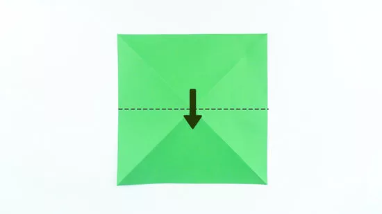 |
step 1 :
Fold a square sheet of paper in half. First, fold the top right corner down to the bottom left, then fold the top left corner down to the bottom right to create an “X” crease. Then, fold the top half of the paper downward, so that the top edge meets the bottom edge. Seal the fold with your finger, then unfold it. The new crease you've made crosses horizontally through the X-fold. |
| 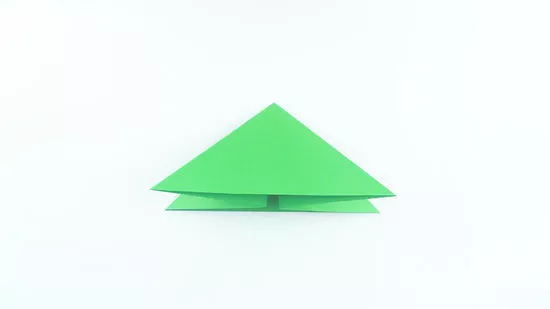 |
step 2 :
Pinch in the sides to form a triangle. Push the folds of the horizontal crease in toward the center. As you do this, the square will collapse into a triangle shape with 2 sides. |
| 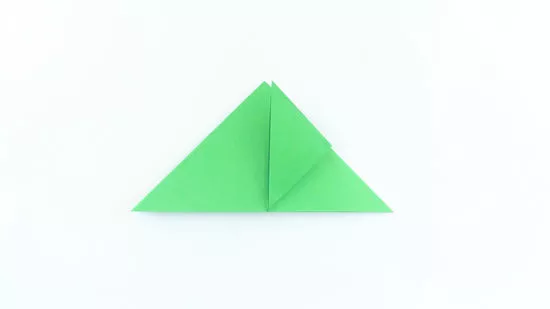 |
step 3 :
Fold one corner of the triangle upward. The long edge of the triangle has 2 layers. Take the top layer’s right corner and fold it upward to the top point of the triangle. Crease the fold with your finger. |
| 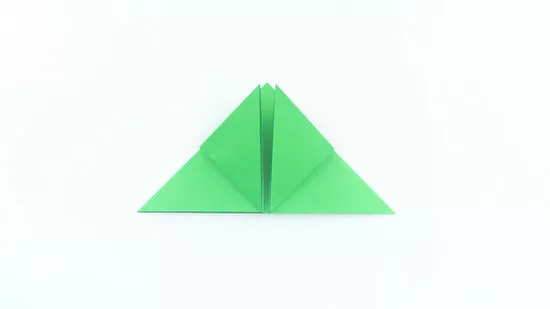 |
step 4 :
Fold the other triangle corner upward. Take the top corner on the other side of the triangle. Fold it upward so that the tip of the corner touches the tip of the triangle. Crease the fold with your finger. The paper now looks like a triangle with a diamond in the middle. |
| 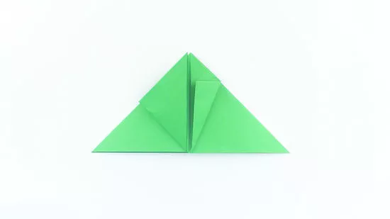 |
step 5 :
Fold the right corner of the diamond inward. With the base of the triangle facing you, grab the right corner of the diamond. Fold it so the right edge of the diamond lines up with the centerline. Crease the fold with your finger.
|
| 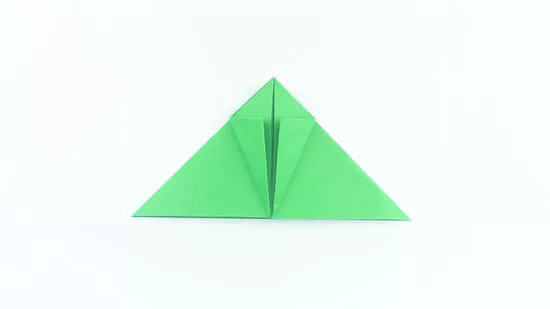 |
step 6 :
Repeat the fold on the other corner of the diamond. With the base of the triangle facing you, grab the left corner of the diamond, and fold it inward so that the left edge lines up with the centerline. Run your finger along the fold to crease it. |
| 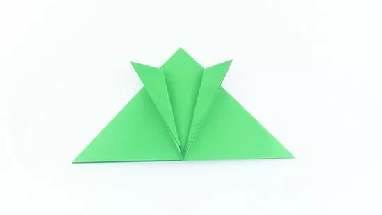 |
step 7 :
Fold the center edges of the diamond outward. Your diamond now has 2 flaps. Fold the right flap out, toward the right side of the triangle, so that its edge lines up with the right edge of the diamond. Crease it. Do the same with the left flap of the diamond to create the frog’s front legs. |
| 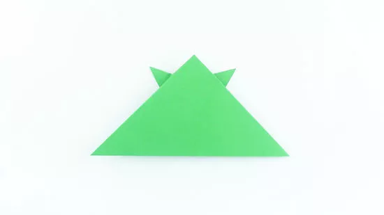 |
step 8 :
Flip the paper over. Rest it on the table so that the long edge of the triangle is facing you. The frog is starting to take shape! The front legs now poke out from underneath the top corner of the triangle. |
| 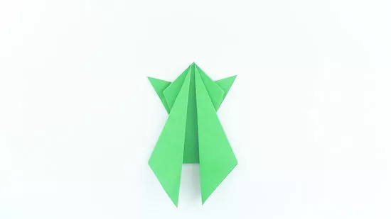 |
step 9 :
Fold in the bottom corners. Take the bottom right corner and fold it so that the edge lines up with the center of the frog. Crease it with your finger. Now fold in the left bottom corner in the same way, so that its edge meets the edge of the other side at the center, creating an upside-down kite shape. |
| 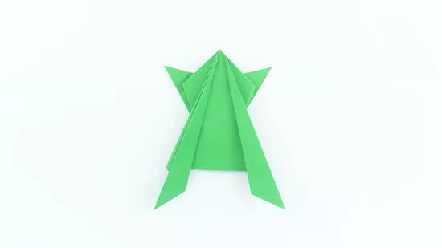 |
step 10 :
Bring the inside edges outwards. Fold the right flap of the diamond outward, so that its inner edge lines up with its outer edge. Crease the fold. Do the same with the left flap of the diamond. These newly folded triangles will become the frog’s back legs. |
| 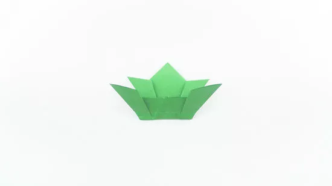 |
step 11 :
Fold the frog in half. Flip the frog and position it so that the long back legs are facing you. Then fold the bottom half up toward the top half, near where the body is narrowest. Crease the fold with your finger. |
 |
step 12 :
Bring the frog’s back legs downward. Take the legs you just folded upward, and fold them downward, about 0.5 in (1.3 cm) above the last fold you made. Then flip the frog over so that it’s standing on all 4 legs. Your origami frog is complete! |